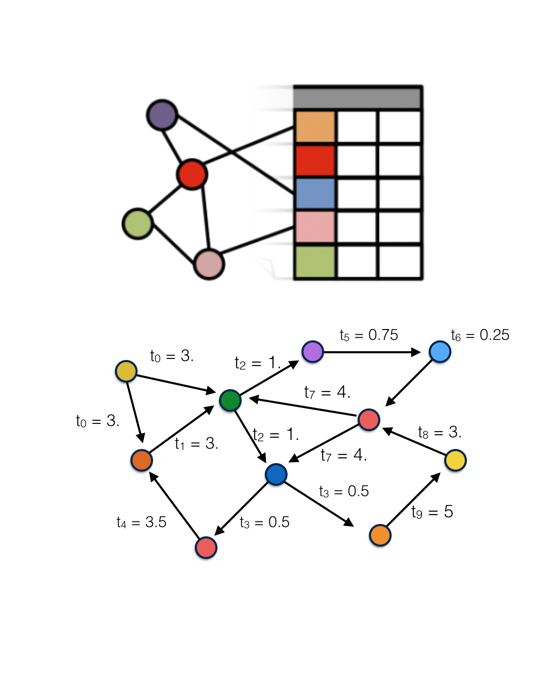

name: title layout: true class: center, middle, title --- count: false # Dispatches from the Convergence Coalface: ## HPC, Big Data, and Large Scale Genomics Jonathan Dursi<br/> Senior Research Associate<br/> Centre for Computational Medicine<br/> The Hospital for Sick Children<br/> https://github.com/ljdursi/IACS-SBU-2018 --- name: my-background-1 layout: false .left-column[ ## Who Am I? ### Old HPC Hand... ] .right-column[ <img src="assets/img/springhill.png" style="float: center;" width=70%> Been doing this work for a while... ] --- name: my-background-1 layout: false .left-column[ ## Who Am I? ### Old HPC Hand... ] .right-column[ Ex-astrophysicist turned large-scale computing. - Large-scale high-speed adaptive reactive fluid fluids - DOE ASCI Center at Chicago - FORTRAN, MPI, Oct-tree regular adaptive mesh - Joined HPC centre after postdoc - OpenMP, CUDA, C++ - Worked with researchers on wide variety of problems ] --- .left-column[ ## Who Am I? ### Old HPC Hand... ### Living in Exciting Times... ] .right-column[ Started my career (c1995-2005) when large scale scientific computing was: * ~20 years of stability * Bunch of x86, MPI, ethernet or infiniband * No one outside of academia was much doing big number/data crunching * Pretty stable set of problems ] --- ## Ye Olde Entire Scientific Computing Worlde, c. 2002 .center[<img src="assets/img/ScientificComputing2002.png" width=75%></img>] (map from http://mewo2.com/notes/terrain/) --- ## Ye Olde Entire Scientific Computing Worlde, c. 2002 <img src="assets/img/ScientificComputing2002.png" width=33% style="float: right;"></img> It was a simpler time: * Statistial Computing largely the domain of the social sciences, some experimental sciences - R was beginning to be quite popular * Physical scientists working with Big Iron or workstations, performing simulation or analysis of comparitively regular data sets - FORTRAN/C/C++(?) + MPI + OpenMP - MATLAB, IDL - Python (Numeric) * Not a lot of SQL/database work in traditional technical computing, but communications up and downstream w/ statistical computing * Maybe infrequent ferry service between statistical computing and MATLAB communities --- ## And Then They Came, c. 2007 .center[<img src="assets/img/ScientificComputing2007.png" width=75%></img>] --- ## And Then They Came, c. 2007 .center[<img src="assets/img/ScientificComputing2007.png" width=33% style="float: right;"></img>] Widespread adption of computing and networking brought *data*, and lot of it. * “Internet-scale” companies were the first businesses to try taking advantage of all their data, but others soon followed - Hadoop, HDFS spawned an entire ecosystem * In the sciences, genomics was in the right place at right time - Success of Human Genome Project in 2003 - High-throughput sequencing technologies becoming available - Lots and lots of data - but how to process it? - Arrived after traditional HPC was quite mature, optimized for its problems. - “Big Data” was just starting to develop tools, technique --- name: my-background-2 layout: false .left-column[ ## Who Am I? ### Old HPC Hand... ### Living in Exciting Times... ### Gone Into Genomics ] .right-column[ Started looking into Genomics in ~2013: - Large computing needs - Very interesting algorithmic challenges - HPCer to the rescue, right? Made move in 2014 - Ontario Institute for Cancer Research - Working with Jared Simpson, author of ABySS (amongst other things) - First open-source human-scale de novo genome assembler - MPI-based ] -- .right-column-cont[ - ABySS 2.0 just came out, with a new non-MPI mode ] --- name: my-background-2 layout: false .left-column[ ## Who Am I? ### Old HPC Hand... ### Living in Exciting Times... ### Gone Into Genomics ] .right-column[ In the meantime, one of the de-facto standards for genome analysis, GATK, has just announced that version 4 will support distributed-memory cluster computing — using Apache Spark. .center[<img src="assets/img/gatk-spark-news.png" width=75%></img>] ] --- ## The Present Day, 2018 .center[<img src="assets/img/ScientificComputing2017.png" width=75%></img>] --- ## Genomics is starting to form a bridge between the two solitudes <img src="assets/img/ScientificComputing2017.png" width=33% style="float: right;"></img> * Data, not simulation, intensive - Truly large amounts of data - Irregular data lookups: complex graphs, indices - Looks more like NoSQL databases, social networks than PDEs on regular grids * But fundamentally science - Extremely subtle analyses - Asking questions that haven't been asked before - Testing, discovery of methods, means scale _down_ vital --- ## Genomics is starting to form a bridge between the two solitudes <img src="assets/img/ScientificComputing2017.png" width=33% style="float: right;"></img> * Genomics moving much faster than HPC, somewhat faster than Big Data in building the bridge - Immediate needs - HPC: “convergence” around exascale - Little impact on current practice - Big Data: re-learning HPC lessons as needed - Individual projects adopt either better single-node performance or distribute memory performance - Genomics needs both --- layout: false .left-column[ ## Outline ] .right-column[ * Why HPC/Big Data convergence is inevitible - HPC: Decreasing regularity at scale - Big Data: Increasing performance needs * Genomics as a driver - Data volumes - Data types - Immediate needs * A tour of increasingly hybrid genomics projects - Pan-Cancer Analysis of Whole Genomes - Nanopore sequencing - CanDIG (http://www.distributedgenomics.ca) * Near-term large-scale genomics futures ] --- layout: false count: false class: center, middle, inverse ## HPC / Big Data Convergence --- ## Convergence Ahead <img src="assets/img/convergence-collision.png" width=33% style="float: right;"></img> Because HPC and Big Data started in different places and are on different paths, convergence is inevitable: * Simulations are getting more complex, dynamic * Big data problems have long been in-memory, increasingly complex compute But the underlying problems are more or less the same! --- .left-column[ ## Convergence Ahead ### HPC's path ] .right-column[ HPCs path over the last ~20 years has largely been about scale * Scaling up simulations * Story mainly about hardware * Fundamental software stack largely unchanged - (though adoption of directive-based approaches for accelerators suggests some willingess to adopt new approaches) <img src="assets/img/convergence-hpc-bigger.png" width=75% style="float: center;"></img> ] --- .left-column[ ## Convergence Ahead ### HPC's path ### Big Data's path ] .right-column[ Big Data's path over the past ~10 years has always taken compute/data at scale as a given * Scaling up complexity of calculations * Story mainly about software stack * Fundamental approach to hardware largely unchanged - (although, again, adoption of accelerators for some use cases) </img> ] --- .left-column[ ## Convergence Ahead ### HPC's path ### Big Data's path ### Similar problems ] .right-column[ Big Data problems same as HPC, if in different context - Large scale network problems - Graph operations - Similarity computations, clustering, optimization, - Linear algebra - Tree methods - Time series - FFTs, smoothing, ... ] --- .left-column[ ## Convergence Ahead ### HPC's path ### Big Data's path ### Similar problems ### Linear algebra ] .right-column[ Almost any sort of numeric computation requires linear algebra. In many big-data applications, the linear algebra is _extremely_ sparse and unstructured; say doing similarity calculations of documents, using a bag-of-words model. If looking at ngrams, cardinality can be enormous, no real pattern to sparsity .center[<img src="assets/img/bag-of-words.png" width="75%"></img>] ] --- .left-column[ ## Convergence Ahead ### HPC's path ### Big Data's path ### Similar problems ### Linear algebra ### Graph problems ] .right-column[ As with other problems - big data graphs are like HPC graphs, but more so. Very sparse, very irregular: nodes can have enormously varying degrees, _e.g._ social graphs .center[<img src="assets/img/social-graph.png" width=75%></img>] https://en.wikipedia.org/wiki/Social_graph ] --- .left-column[ ## Convergence Ahead ### HPC's path ### Big Data's path ### Similar problems ### Linear algebra ### Graph problems ] .right-column[ Generally decomposed in similar ways. Processing looks very much like neighbour exchange on an unstructured mesh; can map unstructured mesh computations onto (very regular) graph problems. .center[<img src="assets/img/flink-sssp.png" width=75%></img>] https://flink.apache.org/news/2015/08/24/introducing-flink-gelly.html ] --- .left-column[ ## Convergence Ahead ### HPC's path ### Big Data's path ### Similar problems ### Linear algebra ### Graph problems ] .right-column[ Calculations on (_e.g._) social graphs are typically very low-compute intensity: - Sum - Min/Max/Mean So that big-data graph computations are often _more_ latency sensitive than more compute-intensive technical computations ⇒ lots of work done and in progress to reduce communication/framework overhead .center[<img src="assets/img/graphx-tables_and_graphs.png" width=75%></img>] https://spark.apache.org/docs/1.2.1/graphx-programming-guide.html ] --- .left-column[ ## Convergence ### HPC Side ] .right-column[ The problems big-data practitioners face are either: * The same as in traditional HPC * The same as new scientific computing fields * Or what data analysis/HPC will be facing towards exascale - Less regular/structured - More dynamic * This is starting to be recognized in HPC, much talk of “HPC/HPDA convergence”. ] -- .right-column-cont[ Lots of whitepapers and vendor press releases... .center[<img src="assets/img/hpc-convergence.png" width=75%></img>] ] --- .left-column[ ## Convergence ### HPC Side ### Dataflow ] .right-column[ Interesting work going on, but largely aimed at “for exascale” at some time in the future; genomics could use these now! Dataflow starting to attract attention in HPC, e.g. [PaRSEC at ICL](http://icl.utk.edu/parsec/): <img src="assets/img/parsec-toolchain.png" width=45%></img> <img src="assets/img/parsec-QR.png" width=40%></img> Make use of compilers, runtimes to more effectively parallelize complex data access patterns ] --- .left-column[ ## Convergence ### HPC Side ### Dataflow ### Extended PGAS ] .right-column[ Interesting work going on, but largely aimed at “for exascale” at some time in the future; genomics could use these now! Extended memory-hierarchy PGAS langauges with very deep runtime stacks, like Legion .center[<img src="assets/img/legion-stack.png" width=50%></img>] ] --- .left-column[ ## Convergence ### HPC Side ### Big Data Side ] .right-column[ The Big Data community thinks in terms of improving performance, not really in terms of “converging” with anything else. ] -- .right-column-cont[ To the extent that Big Data thinks of HPC at all, not as a source of inspiration or innovation. .center[</img>] [Slide from [talk](https://www.slideshare.net/DataScienceAssociati/using-ai-to-tackle-the-future-of-health-care-data) by Brian Dolan, Deep6 AI] ] --- .left-column[ ## Convergence ### HPC Side ### Big Data Side ] .right-column[ The innovations on the Big Data side come from databases and from machine learning. Databases: * Fast (100 μs or better) irregular distributed data access * Lean heavily on hardware knowledge Machine learning: * More tightly coupled iterative computing * Lean more on software design ] --- .left-column[ ## Convergence ### HPC Side ### Big Data Side #### Commodity H/W ] .right-column[ [ScyllaDB](https://www.scylladb.com): * Very careful (HPC-like) C++ tuned on-node implementation (http://seastar.io) - Tasks pinned to cores - Sharding - Lock-free data structures * User-space networking and ethernet library Data Plane Development Kit (DPDK: https://dpdk.org) - gt; 10M packets/sec .center[</img>] ] --- .left-column[ ## Convergence ### HPC Side ### Big Data Side #### Commodity H/W #### RDMA ] .right-column[ [FaRM](https://www.microsoft.com/en-us/research/publication/farm-fast-remote-memory/) from Microsoft Research: * RDMA + RPC * SSDs Uses RDMA on converged 40 GigE + SSDs to get ~30 μs latencies to 1.8TB of key-value data on disk over 20 machines at high load (8 million lookups/sec). .center[</img>] Image from the [FaRM USENIX paper](https://www.usenix.org/system/files/conference/nsdi14/nsdi14-paper-dragojevic.pdf) ] --- .left-column[ ## Convergence ### HPC Side ### Big Data Side #### Commodity H/W #### RDMA #### TensorFlow ] .right-column[ <img src="assets/img/tensors_flowing.gif" width=33% style="float: right;"></img> Tensorflow: from Google, Nov 2015 * Computation with dataflow graphs * Data is always in the form of “tensors” (n-d arrays). * Deep learning and other machine learning tasks. * Lots of BLAS operations and function evaluations but also general numpy-type operations, can use GPUs or CPUs. Getting very close to traditional HPC problems ] --- .left-column[ ## Convergence ### HPC Side ### Big Data Side #### Commodity H/W #### RDMA #### TensorFlow ] .right-column[ All sorts of computations on regular arrays can be performed. Some computations can be split across GPUs, or (eventually) even nodes. All are multi-threaded. .center[<img src="assets/img/tf_mandelbrot.png" width=75%>] ] --- .left-column[ ## Convergence ### HPC Side ### Big Data Side #### Commodity H/W #### RDMA #### TensorFlow ] .right-column[ All sorts of computations on regular arrays can be performed. Some computations can be split across GPUs, or (eventually) even nodes. All are multi-threaded. .center[<img src="assets/img/tf_wave_eqn.png" width=75%>] ] --- .left-column[ ## Convergence ### HPC Side ### Big Data Side #### Commodity H/W #### RDMA #### TensorFlow ] .right-column[ As with laying out the computations, distributing the computations is still quite manual: ```python with tf.device("/job:ps/task:0"): weights_1 = tf.Variable(...) biases_1 = tf.Variable(...) with tf.device("/job:ps/task:1"): weights_2 = tf.Variable(...) biases_2 = tf.Variable(...) with tf.device("/job:worker/task:7"): input, labels = ... layer_1 = tf.nn.relu(tf.matmul(input, weights_1) + biases_1) logits = tf.nn.relu(tf.matmul(layer_1, weights_2) + biases_2) # ... train_op = ... with tf.Session("grpc://worker7.example.com:2222") as sess: for _ in range(10000): sess.run(train_op) ``` Communications is done using [gRPC](http://www.grpc.io), a high-performance RPC library based on what Google uses internally. ] --- .left-column[ ## Convergence ### HPC Side ### Big Data Side #### Commodity H/W #### RDMA #### TensorFlow #### Spark ] .right-column[ Spark (2012) is in some ways “post-Hadoop”; it can happily interact with the Hadoop stack but doesn't require it. Built around concept of in-memory resilient distributed datasets * Tables of rows, distributed across the job, normally in-memory * Immutable * Restricted to certain transformations Used for database, machine learning (linear algebra, graph, tree methods), _etc._ .center[<img src="assets/img/spark-rdd.png" width=50%></img>] ] --- .left-column[ ## Convergence ### HPC Side ### Big Data Side #### Commodity H/W #### RDMA #### TensorFlow #### Spark ] .right-column[ <img src="assets/img/logistic-regression.png" width=33% style="float: right;"></img> Being in-memory was a huge performance win over Hadoop MapReduce for multiple passes through data. Spark immediately began supplanting MapReduce for complex calculations. Project Tungsten (2015) was an extensive rewriting of core Spark for performance. * Get rid of JVM memory management, handle it themselves (FORTRAN77 workspace arrays!) * Vastly improved cache performance * Code generation (more later) In 2016, built-in GPU support. ] --- layout: false .left-column[ ## Convergence ### HPC Side ### Big Data Side #### Commodity H/W #### RDMA #### TensorFlow #### Spark ] .right-column[ Spark fault-tolerant tables (RDDs, Resiliant Distributed Datasets) prove to be a very powerful abstraction. Can easily use join, _etc._ to bring all values associated with a key together: - Like all stencil terms that are contribute at a particular grid point .center[<img src="assets/img/spark-rdds-diffusion.png" width=55%></img>] Can build on dataframes for data analysis ] --- layout: false .left-column[ ## Convergence ### HPC Side ### Big Data Side #### Commodity H/W #### RDMA #### TensorFlow #### Spark ] .right-column[ Graph library — [GraphX](http://spark.apache.org/graphx/) — has also been implemented on top of RDDs. Many interesting features, but for us: [Pregel](http://blog.acolyer.org/2015/05/26/pregel-a-system-for-large-scale-graph-processing/)-like algorithms on graphs. Nodes passes messages to their neighbours along edges. </img> ] --- .left-column[ ## Convergence ### HPC Side ### Big Data Side #### Commodity H/W #### RDMA #### TensorFlow #### Spark ] .right-column[ This makes implementing unstructured mesh methods extremely straightforward: ```scala def step(g:Graph[nodetype, edgetype]) : Graph[nodetype, edgetype] = { val terms = g.aggregateMessages[msgtype]( // Map triplet => { triplet.sendToSrc(src_msg(triplet.attr, triplet.srcAttr, triplet.dstAttr)) triplet.sendToDst(dest_msg(triplet.attr, triplet.srcAttr, triplet.dstAttr)) }, // Reduce (a, b) => (a._1, a._2, a._3 + b._3, a._4 + b._4, a._5 + b._5, a._6 + b._6, a._7 + b._7) ) val new_nodes = terms.mapValues((id, attr) => apply_update(id, attr)) return Graph(new_nodes, graph.edges) } ``` .center[<img src="assets/img/graphx-init.png" width=33%></img> <img src="assets/img/graphx-final.png" width=33%></img>] ] --- .left-column[ ## Convergence ### HPC Side ### Big Data Side ### Coming Together ] .right-column[ Reaching towards similar approaches: * Both sides now capable of fully taking advantage of hardware - CPU, but also memory, I/O, network * Dataflow as a model: - Taking advantage of modern compilers, runtimes - Tool for abstracting away architecture: performance portability * Higher level languages * But nothing combines all of the pieces! ] --- layout: false count: false class: center, middle, inverse ## Genomics --- .left-column[ ## Genomics ### Data volumes ] .right-column[ Genomic volumes currently doubling every 7-12 months Currently driven by research projects, on both human and model organisms .center[<img src="assets/img/genomic-data-volumes.png" style="float: center;" width=100%>] ] --- .left-column[ ## Genomics ### Data volumes #### New devices ] .right-column[ <img src="assets/img/genomic-data-volumes.png" style="float: right;" width=33%> This (IMHO) understates the near-term rate of change New devices are arriving which will move some sequencing from specialized core facilities to small labs (_c.f._ “killer micros”) .center[ <img src="assets/img/sequencing-animated.gif" width=40%>] [Credit: [Oxford Nanopore](http://www.nanoporetech.com)] ] --- .left-column[ ## Genomics ### Data volumes #### New devices #### New data types ] .right-column[ Entirely new data types are becoming available for the first time: * Direct RNA sequencing [Credit: [Oxford Nanopore](http://www.nanoporetech.com)] .center[<img src="assets/img/RNA_v1.svg" width=50%>] And fairly new data types or assays are becoming more and more common: * Metagenomics * Transcriptomics * Epigenomics (methylation, CHiP-seq...) ] --- .left-column[ ## Genomics ### Data volumes #### New devices #### New data types #### Genomic medicine ] .right-column[ And all of those changes in research genomics are going to be small potatoes compared to the real elephant in the room: genomic medicine. .center[<img src="assets/img/genomic-medicine.jpg" width=50%>] [“Genomic Medicine: A Decade of Successes, Challenges, and Opportunities”, McCarthy, McLeod, and Ginsburg, (2013)](http://stm.sciencemag.org/content/5/189/189sr4.full) Whole genome sequencing already starting to become part of the toolkit for diagnosing rare diseases, oncology ~$1000 is a lot for a test, but not unfathomable As becomes cheaper/easier/faster, will become standard of care for more and more cases And medicine is _huge_ - hospital spending alone is ~10x entire NIH budget ] --- .left-column[ ## Outline ### With problems in mind: ### Grid PDEs ### Substring operations ] .right-column[ (Much) more recently, working with genomics sequence data. Assembly: - Have small fragments of sequence, must generate whole - Graph methods (de Bruijn or overlap graph) - Find maximal unambiguous paths through the graph <table width=65%> <tbody> <tr><td><img src="assets/img/debruijn-graph.jpg" width=90%></img></td></tr> <tr><td>Figure from <a href="http://www.nature.com/nrg/journal/v14/n5/full/nrg3433.html">Nature Review Genetics</a></td></tr> </tbody> Or may have an assembled graph genome and try to find best match for given observed subsequence ] --- .left-column[ ## Outline ### With problems in mind: ### Grid PDEs ### Substring operations ] .right-column[ (Much) more recently, working with genomics sequence data. Assembly: - Have small fragments of sequence, must generate whole - Graph methods (de Bruijn or overlap graph) - Find maximal unambiguous paths through the graph <table width=65%> <tbody> <tr><td><img src="assets/img/debruijn-graph.jpg" width=90%></img></td></tr> <tr><td>Figure from <a href="http://www.nature.com/nrg/journal/v14/n5/full/nrg3433.html">Nature Review Genetics</a></td></tr> </tbody> Or may have an assembled graph genome and try to find best match for given observed subsequence Or just count observed subsequences ] --- .left-column[ ## Outline ### With problems in mind: ### Grid PDEs ### Substring operations ### Large statistical analyses ] .right-column[ Or just large biostatistical analyses: Closest to my current day job (distributed analysis of private genomics data sets) Imagine RNA sequence expression data: - 100m fragments of sequence (imperfect sampling) - Assigned to particular RNA transcripts - Find out if transcripts are differentially expressed between case and condition Now do that for multiple tissue types, large population... And start correlating with other information (DNA variants, clinical data, phenotypic data,...) <table width=45%> <tbody> <tr><td></img></td></tr> <tr><td>Figure from <a href="http://www.nature.com/nbt/journal/v32/n9/full/nbt.2931.html">Nature</a></td></tr> </tbody> ] --- .left-column[ ## Spark ### Overview ] .right-column[ Hadoop came out in ~2006 with MapReduce as a computational engine, which wasn't that useful for scientific computation. * One pass through data * Going back to disk every iteration However, the ecosystem flourished, particularly around the Hadoop file system (HDFS) and new databases and processing packages that grew up around it. .center[<img src="assets/img/mapreduce.png" height=350px></img>] ] --- .left-column[ ## Spark ### Overview ] .right-column[ Spark (2012) is in some ways “post-Hadoop”; it can happily interact with the Hadoop stack but doesn't require it. Built around concept of in-memory resilient distributed datasets * Tables of rows, distributed across the job, normally in-memory * Immutable * Restricted to certain transformations Used for database, machine learning (linear algebra, graph, tree methods), _etc._ .center[<img src="assets/img/spark-rdd.png" width=50%></img>] ] --- .left-column[ ## Spark ### Overview ### Performance ] .right-column[ <img src="assets/img/logistic-regression.png" width=33% style="float: right;"></img> Being in-memory was a huge performance win over Hadoop MapReduce for multiple passes through data. Spark immediately began supplanting MapReduce for complex calculations. .center[**Lesson 6: Performance is crucial!**] ] -- .right-column-cont[ .center[**...To a point**.] In 2012, either would have been much faster in MPI or a number of HPC frameworks. * No multicore * Generic sockets for communications * No GPUs * JVM: Garbage collection jitter, pausses But development time, lack of fault tolerance, no integration into ecosystem (HDFS, HBase..) mean that not even considered. Don't have to be faster than _everything_. ] --- .left-column[ ## Spark ### Overview ### Performance ] .right-column[ Project Tungsten (2015) was an extensive rewriting of core Spark for performance. * Get rid of JVM memory management, handle it themselves (FORTRAN77 workspace arrays!) * Vastly improved cache performance * Code generation (more later) In 2016, built-in GPU support. .center[**Lesson 8: There will _always_ be pending performance improvements. They're important, but not show-stoppers**.] ] -- .right-column-cont[ .center[**Lesson 9: Big Data frameworks are learning HPC lessons faster than HPC stacks are learning Big Data lessons**.] ] --- .left-column[ ## Spark ### Overview ### Performance ### RDDs ] .right-column[ Operations on Spark RDDs can be: * Transformations, like map, filter, reduce, join, groupBy... * Actions like collect, foreach, .. You build a Spark computation by chaining together transformations; but no data starts moving until part of the computation is materialized with an action. <img src="assets/img/spark-rdd.png" width=75%></img> ] --- layout: false .left-column[ ## Spark ### Overview ### Performance ### RDDs ] .right-column[ Spark RDDs prove to be a very powerful abstraction. Key-Value RDDs are a special case - a pair of values, first is key, second is value associated with. Linda tuple spaces, which underly Gaussian. Can easily use join, _etc._ to bring all values associated with a key together: - Like all stencil terms that are contribute at a particular grid point .center[<img src="assets/img/spark-rdds-diffusion.png" width=55%></img>] ] --- .left-column[ ## Spark ### Overview ### Performance ### RDDs ### Dataframes ] .right-column[ But RDDs are also building blocks. Spark Dataframes are lists of columns, like pandas or R data frames. Can use SQL-like queries to perform calculations. But this allows bringing the entire mature machinery of SQL query optimizers to bear, allowing further automated optimization of data movement, and computation. (Spark Notebook 2) <img src="assets/img/spark-dataframes.png" width=75%></img> ] --- .left-column[ ## Spark ### Overview ### Performance ### RDDs ### Dataframes ### Graphs ] .right-column[ Graph library — [GraphX](http://spark.apache.org/graphx/) — has also been implemented on top of RDDs. Many interesting features, but for us: [Pregel](http://blog.acolyer.org/2015/05/26/pregel-a-system-for-large-scale-graph-processing/)-like algorithms on graphs. Nodes passes messages to their neighbours along edges. </img> ] --- .left-column[ ## Spark ### Overview ### Performance ### RDDs ### Dataframes ### Graphs ] .right-column[ This makes implementing unstructured mesh methods extremely straightforward (Spark notebook 4): ```scala def step(g:Graph[nodetype, edgetype]) : Graph[nodetype, edgetype] = { val terms = g.aggregateMessages[msgtype]( // Map triplet => { triplet.sendToSrc(src_msg(triplet.attr, triplet.srcAttr, triplet.dstAttr)) triplet.sendToDst(dest_msg(triplet.attr, triplet.srcAttr, triplet.dstAttr)) }, // Reduce (a, b) => (a._1, a._2, a._3 + b._3, a._4 + b._4, a._5 + b._5, a._6 + b._6, a._7 + b._7) ) val new_nodes = terms.mapValues((id, attr) => apply_update(id, attr)) return Graph(new_nodes, graph.edges) } ``` .center[<img src="assets/img/graphx-init.png" width=33%></img> <img src="assets/img/graphx-final.png" width=33%></img>] ] --- .left-column[ ## Spark ### Overview ### Performance ### RDDs ### Dataframes ### Graphs ] .right-column[ All of these features - key-value RDDs, Dataframes, (now Datasets), and graphs, are built upon the basic RDD plus the fundamental transformations. .center[**Lesson 4b: The right abstractions — decompositions with enough primitive operations to act on them — can be enough to build an ecosystem on**] ] --- .left-column[ ## Spark ### Overview ### Performance ### RDDs ### Dataframes ### Graphs ### Execution graphs ] .right-column[ Delayed computation + view of entire algorithm allows optimizations over the entire computation graph. So for instance here, nothing starts happening in earnest until the `plot_data()` (Spark notebook 1) ```python # Main loop: For each iteration, # - calculate terms in the next step # - and sum for step in range(nsteps): data = data.flatMap(stencil) \ .reduceByKey(lambda x, y:x+y) # Plot final results in black plot_data(data, usecolor='black') ``` Knowledge of lineage of every shard of data also means recomputation is straightforward in case of node failure ] --- .left-column[ ## Spark ### Overview ### Performance ### RDDs ### Dataframes ### Graphs ### Execution graphs ### Adoption in Science ] .right-column[ Adoption has been enormous _broadly_: .center[<img src="assets/img/spark-interest.png" width=75%></img>] .center[Google Search] .center[</img>] .center[Questions on Stack Overflow] ] --- .left-column[ ## Spark ### Overview ### Performance ### RDDs ### Dataframes ### Graphs ### Execution graphs ### Adoption in Science ] .right-column[ But comparatively little uptake in science yet - even though it seems like it would be right at home in large-scale genomics: - Graph problems - Large statistical analyses (GATK is a bit of a special case - more research infrastructure than a research tool per se) ] -- .right-column-cont[ My claim is that its heavyweight nature is an awkward fit for scientist patterns of work - Noodle around on laptop - Develop methods, gain confidence on smaller data sets - Scale up over time Who spends months developing a method, tries it for the first time on 100TB of data, only to discover the approach is doomed to failure? .center[**Lesson 10: For science, scale _down_ may be as important as scale up**] ] --- .left-column[ ## Spark ### Overview ### Performance ### RDDs ### Dataframes ### Graphs ### Execution graphs ### Adoption ### Pros/Cons ] .right-column[ **Cons** * JVM Based (Scala) means C interoperability always fraught. * Not much support for high-performance interconnects (although that's coming from third parties - [HiBD group at OSU](http://hibd.cse.ohio-state.edu)) * Very little explicit support for multicore yet, which leaves much performance on the ground. * Doesn't scale _down_ very well; very heavyweight **Pros** * Very rapidly growing * Performance improvements version to version * Easy to find people willing to learn ] --- .left-column[ ## Common Themes ### Higher-Level Abstractions ] .right-column[ - Spark: Resilient distributed data set (table), upon which: - Graphs - Dataframes/Datasets - Machine learning algorithms (which require linear algebra) - Mark of a good abstraction is you can build lots atop it! - Dask: - Task Graph - Dataframe, array, bag operations - TensorFlow: - Data flow - Certain kinds of “Tensor” operations ] --- .left-column[ ## Common Themes ### Higher-Level Abstractions ### Data Flow ] .right-column[ All of the approaches we've seen implicitly or explicitly constructed dataflow graphs to describe where data needs to move. Then can build optimization on top of that to improve data flow, movement These approaches are extremely promising, and already completely usable at scale for some sorts of tasks. Already starting to attract attention in HPC, e.g. [PaRSEC at ICL](http://icl.utk.edu/parsec/): <img src="assets/img/parsec-toolchain.png" width=45%></img> <img src="assets/img/parsec-QR.png" width=40%></img> ] --- .left-column[ ## My Benchmark Problems ### PDEs ] .right-column[ Heavy reliance on execution-graph optimizers has a lot of promise for highly dynamic simulations. But where we are now, big Data frameworks aren't going to come save me from the current state of the art in large-scale PDE frameworks: * [Trilinos](https://trilinos.org/capability-areas/meshes-geometry-and-load-balancing/) * [BoxLib](https://ccse.lbl.gov/BoxLib/) * ... Amazing efforts, great tools, and the world is much better with them that it would be without them. But huge code bases, very challenging to start with as a user, very difficult to make significant changes. Based on MPI, which you may have heard I have opinions about. ] --- .left-column[ ## My Benchmark Problems ### PDEs ### Genomics ] .right-column[ Large genomics today means buying or renting very large (up to 1TB) RAM machines. I'm starting to think that this reflects a failure of our parallel programming community. Good news: there's lots of great work algorithmic being done in the genomics community - Succinct data structures - Approximate streaming methods But this is work done because of scarsity, and the size of projects being tackled is being limited. ] --- .left-column[ ## My Benchmark Problems ### PDEs ### Genomics ] .right-column[ There are projects like [HipMer](http://portal.nersc.gov/project/hipmer/) (large-scale assembler, UPC++), but not a general solution. GraphX for Spark could be useful, but only becomes performant on huge problems - “Missing Middle” for where most of the work is, and for adoption ] --- .left-column[ ## My Benchmark Problems ### PDEs ### Genomics ### Biostatistics ] .right-column[ Biostatistics is in exactly the same boat. R works really, really well for ~desktop-scale problems. Spark (or a number of other things) work if the data size starts large enough. - Big international genomics projects Death valley in between. ] --- .left-column[ ## My Benchmark Problems ### PDEs ### Genomics ### Biostatistics ] .right-column[ <img src="assets/img/hail-vds-rep.png" width=50% style="float:right;"></img> Here's where we are now - the Broad institute in Boston put together the [Hail project](https://www.hail.is/hail/overview.html#variant-dataset-vds): * Based on Spark * "does person X have genetic variant Y" matrix of records * Interactively query reductions of rows and columns * A big problem is several billion entries. Future proof, but... * This is not a hard problem! * Very unwieldly for individual researchers on smaller sets. ] ---